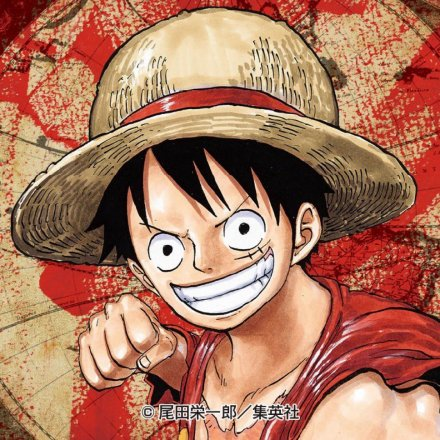

拥有财富、名声、权力,这世界上的一切的男人
“海贼王”哥尔·D·罗杰,在被行刑受死之前说了一句话,让全世界的人都涌向了大海。“想要我的宝藏吗？如果想要的话,那就到海上去找吧,我全部都放在那里。”,世界开始迎接“大海贼时代”的来临。
时值“大海贼时代”,为了寻找传说中海贼王罗杰所留下的大秘宝“ONE
PIECE”,无数海贼扬起旗帜,互相争斗。有一个梦想成为海贼王的少年叫路飞,他因误食“恶魔果实”而成为了橡皮人,在获得超人能力的同时付出了一辈子无法游泳的代价。十年后,路飞为实现与因救他而断臂的香克斯的约定而出海,他在旅途中不断寻找志同道合的伙伴,开始了以成为海贼王为目标的冒险旅程。

船员介绍
船长
蒙奇·D·路飞

“草帽一伙”的船长,外号“草帽小子”。东海出身,悬赏金30亿贝里。“草帽一伙”的创立者,是被称作“极恶的世代”中登陆香波地群岛的11位超新星的其中一位。在“和之国”事件中将原“四皇”之一的“百兽”凯多击溃,顶替其成为新的“四皇”。是食用了橡胶果实的橡胶人（五老星认为这是人人果实·幻兽种·尼卡形态）。梦想成为“海贼王”,以此为目标在大海上航行。
战斗员
罗罗诺亚·索隆
“草帽一伙”的战斗员，外号“海贼猎人”。东海出身，悬赏金11亿1100万贝里。“草帽一伙”第一位加入的成员，与船长路飞一样是被称作“极恶的世代”中登陆香波地群岛的11位超新星的其中一位。是使用三把刀战斗的三刀流剑士，梦想成为“世界第一大剑豪”，以此为目标在大海上航行。

航海士
娜美
“草帽一伙”的航海士，外号“小贼猫”。东海出身，悬赏金3亿6600万贝里。使用天候棒结合气象科学进行战斗。“草帽一伙”第二位加入的成员。 梦想绘制“全世界的地图”，以此为目标在大海上航行。
狙击手
乌索普
“草帽一伙”的狙击手，外号“狙击之王”、“GOD·乌索普”。东海出身，悬赏金5亿贝里。使用特制弹弓和植物弹药进行战斗。“草帽一伙”第三位加入的成员。梦想“成为勇敢的海上战士”，以此为目标在大海上航行。
厨师
山治
“草帽一伙”的厨师，外号“黑足”。北海出身，悬赏金10亿3200万贝里。使用踢技和杰尔马战斗服进行战斗。“草帽一伙”第四位加入的成员。梦想“找到传说中的海域·All Blue”，以此为目标在大海上航行。
船医
托尼托尼·乔巴
“草帽一伙”的船医，外号“爱吃棉花糖的乔巴”。伟大航路出身，悬赏金1000贝里。是食用了人人果实的驯鹿。“草帽一伙”第五位加入的成员。梦想“成为万能药”，以此为目标在大海上航行。

考古学家
妮可·罗宾
 “草帽一伙”的考古学家，外号“恶魔之子”。西海出身，悬赏金9亿3000万贝里。食用了花花果实的能力者。“草帽一伙”第六位加入的成员。梦想“找到空白的100年历史”，以此为目标在大海上航行。
“草帽一伙”的考古学家，外号“恶魔之子”。西海出身，悬赏金9亿3000万贝里。食用了花花果实的能力者。“草帽一伙”第六位加入的成员。梦想“找到空白的100年历史”，以此为目标在大海上航行。
船匠
弗兰奇
“草帽一伙”的船匠，外号“铁人·弗兰奇”。南海出身，悬赏金3亿9400万贝里。使用改造后的身体以及自制兵器进行战斗。“草帽一伙”第七位加入的成员。梦想“乘坐自己制作的梦想之船绕伟大航路一周”，以此为目标在大海上航行。

音乐家
布鲁克
“草帽一伙”的音乐家，外号“鼻歌·布鲁克”、“灵魂之王”。西海出身，悬赏金3亿8300万贝里。食用了黄泉果实的能力者。使用一把西洋剑战斗的剑士，战斗时会使用黄泉果实的能力作为辅助。“草帽一伙”第八位加入的成员。梦想“与拉布汇合，实现与拉布的约定”，以此为目标在大海上航行。
舵手
甚平
“草帽一伙”的舵手，外号“海侠甚平”。龙宫王国出身，悬赏金11亿贝里。鱼人族的鲸鲨鱼人，使用鱼人空手道和鱼人柔道进行战斗。“草帽一伙”第九位加入的成员，原王下七武海之一。梦想“帮助路飞成为海贼王，见证鱼人族和人鱼族获得真正的自由”，以此为目标在大海上航行。
船只介绍
前进·梅利号
由东海西布罗村的管家梅利设计的梅利号，是草帽一伙的第一艘正式的海贼船。从东海的西布罗村一直到伟大航路的司法之岛，陪伴了草帽一伙很长的一段冒险。由于草帽一伙对梅利的深厚感情，使得梅利号诞生了船灵，在七水之都曾经拖着破损的船身前往司法之岛救下草帽一伙，最终不堪重负，船体崩坏，草帽一伙对其进行了海葬，与梅利号挥泪告别。
千里阳光号
由草帽一伙的船匠弗兰奇设计，卡雷拉公司协助制作的海贼船。